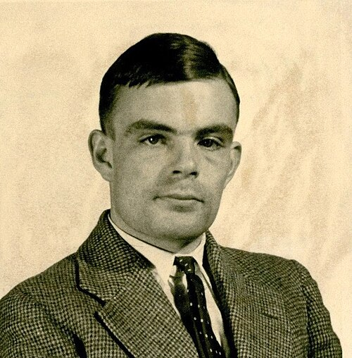

Alan Turing (1912 - 1954)
About Alan Turing
Alan Turing was a British mathematician and computer scientist who was born in London in 1912 and died in 1954. He is considered one of the pioneers of modern computer science. In 1936, he introduced the concept of a theoretical computing machine, now known as the Turing machine. During World War II, he contributed to British efforts to decrypt German military communications. His research also helped establish important ideas in the field of artificial intelligence.
Important Events in His Life
- 1912: Alan Turing was born in London, England.
- 1931: He began studying mathematics at King's College, Cambridge.
- 1936: He published his work on computable numbers and introduced the concept of the Turing machine.
- 1939: He began working at Bletchley Park on breaking German encrypted messages.
- 1950: He published "Computing Machinery and Intelligence", introducing the imitation game.
- 1954: Alan Turing died at the age of 41.
Key Contributions
- Turing Machine: Developed a theoretical model of computation that became fundamental to computer science.
- Cryptanalysis: Made important contributions to British codebreaking efforts during World War II.
- Artificial Intelligence: Proposed the imitation game, commonly known as the Turing Test.
- Computer Development: Contributed to early computer design and the development of computing theory.
Learn More About Alan Turing
Explore the following resources to learn more about his life, research and achievements.
Learn More Read Biography